Week 2 - Manipulating spatial data
In week 1, you got to load up some spatial data and make some pretty maps. This week, we will be stepping up a gear and learning how to crop and subset spatial data. We will also be go through the process of resampling rasters.
Learning outcomes
By the end of this week, you will be able to:
- Clip and subset vector and raster data
- Resample rasters
- Relate spatial data
Load the necessary libraries for this week
library(sp)
library(raster)
library(leaflet)
library(rgdal)
library(geosphere)
library(rgeos)
library(wesanderson)
library(stats)
library(ggplot2)
First we are going to subset some spatial (polygon) data. For this
exersize, we are going to use the admin 1 boundaries for Ethiopia we
used in week 1. As a reminder, we can load these in from a local
shapefile using the readOGR function, or we can use the handy getData
function from the raster package to access GADM data.
ETH_Adm_1 <- raster::getData("GADM", country="ETH", level = 1)
You can subset a SpatialPolygonsDataFrame just like a data frame. Let’s subset the data first by row/polygon
ETH_Adm_1_cropped <- ETH_Adm_1[1,]
# Get a summary of the cropped data
ETH_Adm_1_cropped
## class : SpatialPolygonsDataFrame
## features : 1
## extent : 38.6394, 38.90624, 8.833486, 9.098195 (xmin, xmax, ymin, ymax)
## crs : +proj=longlat +datum=WGS84 +no_defs
## variables : 10
## names : GID_0, NAME_0, GID_1, NAME_1, VARNAME_1, NL_NAME_1, TYPE_1, ENGTYPE_1, CC_1, HASC_1
## value : ETH, Ethiopia, ETH.1_1, Addis Abeba, Āddīs Ābaba|Addis Ababa|Adis-Abeba|Ādīs Ābeba, NA, Astedader, City, 14, ET.AA
# Plot over the top of the full dataset
plot(ETH_Adm_1_cropped)
lines(ETH_Adm_1_cropped, col="red", lwd=2)
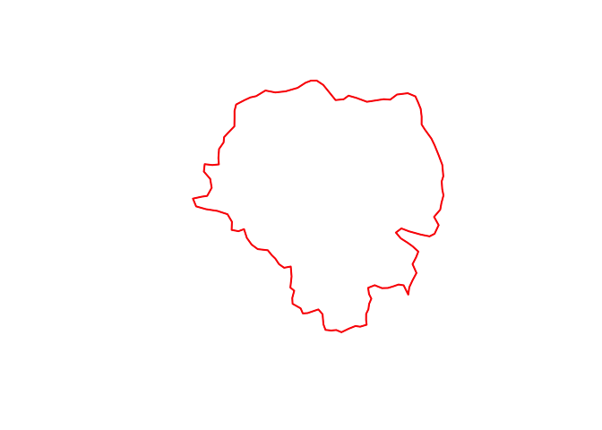
You can also subset by name. For example, if we wanted to extract the polygon representing the boundary of the province “Amhara”
ETH_Adm_1_Amhara <- subset(ETH_Adm_1, ETH_Adm_1$NAME_1=="Amhara") #OR ETH_Adm_1[ETH_Adm_1$NAME_1=="Amhara",] will also work
ETH_Adm_1_Amhara
## class : SpatialPolygonsDataFrame
## features : 1
## extent : 35.25711, 40.21244, 8.714812, 13.7687 (xmin, xmax, ymin, ymax)
## crs : +proj=longlat +datum=WGS84 +no_defs
## variables : 10
## names : GID_0, NAME_0, GID_1, NAME_1, VARNAME_1, NL_NAME_1, TYPE_1, ENGTYPE_1, CC_1, HASC_1
## value : ETH, Ethiopia, ETH.3_1, Amhara, Amara, NA, Kilil, State, 03, ET.AM
#Plot the result
plot(ETH_Adm_1)
lines(ETH_Adm_1_Amhara, col="blue", lwd=2)
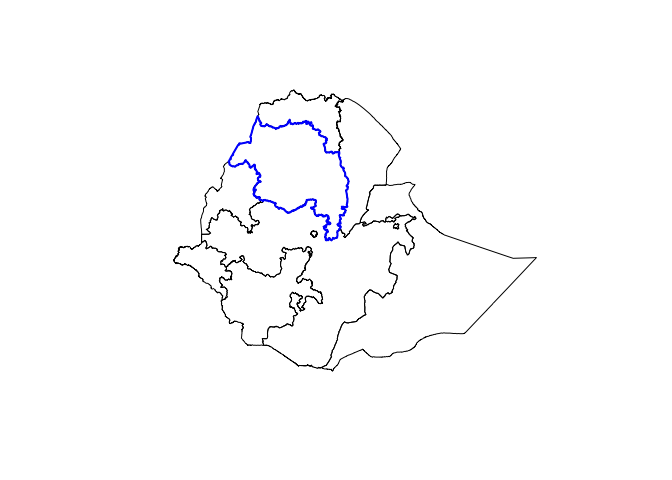 ### Pop quiz * How would you plot all provinces except Amhara? * Try plotting all province using leaflet, with Amhara colored red and all others colored orange.
Spatial overlays
Often, we have point and polygon data and wish to relate them. For example, we might want to summarize point data over regions. To illustrate this, we are going to use the Ethiopia malaria point prevalence data and aggregate that to provincial level to get a provincial level estimate of prevalence.
# Get the point prevalence data from the GitHub repo
ETH_malaria_data <- read.csv("https://raw.githubusercontent.com/phw272c/phw272c.github.io/master/data/mal_data_eth_2009_no_dups.csv",header=T)
# Convert to a SPDF
ETH_malaria_data_SPDF <- SpatialPointsDataFrame(coords = ETH_malaria_data[,c("longitude", "latitude")],
data = ETH_malaria_data[,c("examined", "pf_pos", "pf_pr")],
proj4string = CRS("+init=epsg:4326"))
To identify the Province each point lies within you can use the over
function from the sp package
ETH_Adm_1_per_point <- over(ETH_malaria_data_SPDF, ETH_Adm_1)
Error in .local(x, y, returnList, fn, ...) : identicalCRS(x, y) is not TRUE
This throws an error, because ETH_malaria_data_SPDF and ETH_Adm_1 do
not have exactly the same coordinate reference system (CRS). Let’s take
a look
crs(ETH_Adm_1)
## Coordinate Reference System:
## Deprecated Proj.4 representation: +proj=longlat +datum=WGS84 +no_defs
## WKT2 2019 representation:
## GEOGCRS["unknown",
## DATUM["World Geodetic System 1984",
## ELLIPSOID["WGS 84",6378137,298.257223563,
## LENGTHUNIT["metre",1]],
## ID["EPSG",6326]],
## PRIMEM["Greenwich",0,
## ANGLEUNIT["degree",0.0174532925199433],
## ID["EPSG",8901]],
## CS[ellipsoidal,2],
## AXIS["longitude",east,
## ORDER[1],
## ANGLEUNIT["degree",0.0174532925199433,
## ID["EPSG",9122]]],
## AXIS["latitude",north,
## ORDER[2],
## ANGLEUNIT["degree",0.0174532925199433,
## ID["EPSG",9122]]]]
crs(ETH_malaria_data_SPDF)
## Coordinate Reference System:
## Deprecated Proj.4 representation: +proj=longlat +datum=WGS84 +no_defs
## WKT2 2019 representation:
## GEOGCRS["unknown",
## DATUM["World Geodetic System 1984",
## ELLIPSOID["WGS 84",6378137,298.257223563,
## LENGTHUNIT["metre",1]],
## ID["EPSG",6326]],
## PRIMEM["Greenwich",0,
## ANGLEUNIT["degree",0.0174532925199433],
## ID["EPSG",8901]],
## CS[ellipsoidal,2],
## AXIS["longitude",east,
## ORDER[1],
## ANGLEUNIT["degree",0.0174532925199433,
## ID["EPSG",9122]]],
## AXIS["latitude",north,
## ORDER[2],
## ANGLEUNIT["degree",0.0174532925199433,
## ID["EPSG",9122]]]]
To reproject to the same CRS, you can use the spTransform function
from the sp package
ETH_malaria_data_SPDF <- spTransform(ETH_malaria_data_SPDF, crs(ETH_Adm_1))
# Check the new;y projected object
ETH_malaria_data_SPDF
## class : SpatialPointsDataFrame
## features : 203
## extent : 34.5418, 42.4915, 3.8966, 9.9551 (xmin, xmax, ymin, ymax)
## crs : +proj=longlat +datum=WGS84 +no_defs
## variables : 3
## names : examined, pf_pos, pf_pr
## min values : 37, 0, 0
## max values : 221, 14, 0.127272727
Now we can re-run the over command
ETH_Adm_1_per_point <- over(ETH_malaria_data_SPDF, ETH_Adm_1)
This gives us a table where each row represents a point from
ETH_malaria_data_SPDF and columns represent the data from ETH_Adm_1.
Let’s take a look
head(ETH_Adm_1_per_point)
## GID_0 NAME_0 GID_1 NAME_1 VARNAME_1 NL_NAME_1 TYPE_1 ENGTYPE_1 CC_1
## 1 ETH Ethiopia ETH.8_1 Oromia Oromiya <NA> Kilil State 04
## 2 ETH Ethiopia ETH.8_1 Oromia Oromiya <NA> Kilil State 04
## 3 ETH Ethiopia ETH.8_1 Oromia Oromiya <NA> Kilil State 04
## 4 ETH Ethiopia ETH.8_1 Oromia Oromiya <NA> Kilil State 04
## 5 ETH Ethiopia ETH.8_1 Oromia Oromiya <NA> Kilil State 04
## 6 ETH Ethiopia ETH.8_1 Oromia Oromiya <NA> Kilil State 04
## HASC_1
## 1 ET.OR
## 2 ET.OR
## 3 ET.OR
## 4 ET.OR
## 5 ET.OR
## 6 ET.OR
Now we can use this to calculate admin unit specific statistics. We might be interested in the number of sites per admin unit. To get that, we could just create a frequency table
table(ETH_Adm_1_per_point$NAME_1)
##
## Benshangul-Gumaz Gambela Peoples Oromia
## 1 1 201
Or we can use the tapply function for more complex calculations.
tapply allows us to apply a function across groups. Let’s look at the
number examined per admin unit
Nex_per_Adm1 <- tapply(ETH_malaria_data_SPDF$examined, ETH_Adm_1_per_point$NAME_1, sum)
Nex_per_Adm1
## Benshangul-Gumaz Gambela Peoples Oromia
## 109 108 24350
Now let’s get the number of positives by admin unit
Npos_per_Adm1 <- tapply(ETH_malaria_data_SPDF$pf_pos, ETH_Adm_1_per_point$NAME_1, sum)
Npos_per_Adm1
## Benshangul-Gumaz Gambela Peoples Oromia
## 1 0 78
From these numbers, we can calculate the prevalence per province
prev_per_Adm1 <- Npos_per_Adm1 / Nex_per_Adm1
prev_per_Adm1
## Benshangul-Gumaz Gambela Peoples Oromia
## 0.009174312 0.000000000 0.003203285
If you want to merge these provincial prevalence estimates back into the
province object ETH_Adm_1 it is best practice to create a new table of
prevalence by provice with unique ID for each province. That unique ID
can be used to relate and merge the data with ETH_Adm_1.
First convert your prev_per_Adm1 vector into a dataframe with an ID column
prev_per_Adm1_df <- data.frame(NAME_1 = names(prev_per_Adm1),
prevalence = prev_per_Adm1,
row.names=NULL)
Now merge this with the ETH_Adm_1 data frame
ETH_Adm_1 <- merge(ETH_Adm_1, prev_per_Adm1_df,
by = "NAME_1")
You can now see that the additional prevalence field has been added
head(ETH_Adm_1)
## NAME_1 GID_0 NAME_0 GID_1
## 1 Addis Abeba ETH Ethiopia ETH.1_1
## 2 Afar ETH Ethiopia ETH.2_1
## 3 Amhara ETH Ethiopia ETH.3_1
## 4 Benshangul-Gumaz ETH Ethiopia ETH.4_1
## 5 Dire Dawa ETH Ethiopia ETH.5_1
## 6 Gambela Peoples ETH Ethiopia ETH.6_1
## VARNAME_1 NL_NAME_1 TYPE_1 ENGTYPE_1
## 1 Āddīs Ābaba|Addis Ababa|Adis-Abeba|Ādīs Ābeba <NA> Astedader City
## 2 <NA> Kilil State
## 3 Amara <NA> Kilil State
## 4 Beneshangul Gumu <NA> Kilil State
## 5 <NA> Astedader City
## 6 Gambela <NA> Kilil State
## CC_1 HASC_1 prevalence
## 1 14 ET.AA NA
## 2 02 ET.AF NA
## 3 03 ET.AM NA
## 4 06 ET.BE 0.009174312
## 5 15 ET.DD NA
## 6 12 ET.GA 0.000000000
We can now plot province colored by prevalence. Let’s use the leaflet package
# First define a color palette based on prevalence
colorPal <- colorNumeric(wes_palette("Zissou1")[1:5], ETH_Adm_1$prevalence)
# Plot with leaflet
leaflet() %>% addProviderTiles("CartoDB.Positron") %>% addPolygons(data=ETH_Adm_1,
col=colorPal(ETH_Adm_1$prevalence),
fillOpacity=0.6) %>%
addLegend(pal = colorPal,
values = ETH_Adm_1$prevalence,
title = "Prevalence")
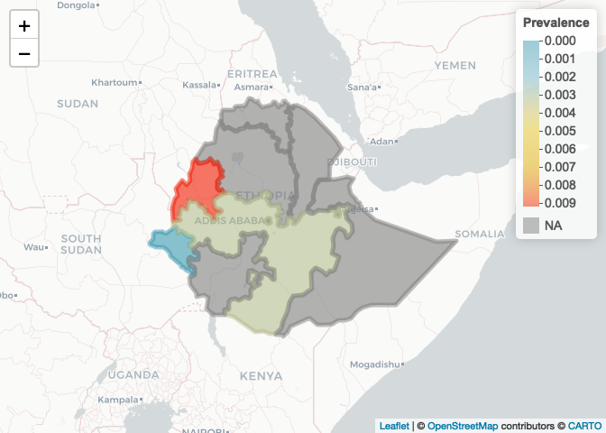
Notes on table joins
In this example, we joined the table of prevalence values for each State
using the common NAME_1 field Often, however, when you are joining a
table of data to some spatial data, they are from different sources and
the common field on which to match rows can be formatted differently.
For example if you were merging a table of state level data for the USA
using the state name, your table might have an entry for California
which would not match with your spatial data if it has california as
the corresponding entry. It is always preferable to use ID codes over
names for matching as these are often less variable. If you do have to
use a character string such as name, the following functions are useful
ways to reformat characters to make sure they match:
substr- this allows you to extract substrings, for examplesubstr("Cali", 1,2)extracts the first to second characters and would give you backCatolower- converts all characters to lower case.toupperis the reverse.gsub- allows you to replace characters. For examplegsub(" ", "-", "CA USA")would replace any whitespace with-, i.e. in this example it would returnCA-USA.
Go here for a worked example of table joins in R.
Pop quiz
- Try generating the same plot using a different color palette.
- How would you plot only the provinces for which you have prevalence estimates?
Manipulating raster data
You’ve now seen how to subset polygons and relate point and polygon data. Now we are going to look at basic manipulations of raster data. We are going to load 2 raster file, elevation and land use for Ethiopia.
# Get elevation using the getData function from the raster package
ETH_elev <- raster::getData("alt", country="ETH")
plot(ETH_elev)
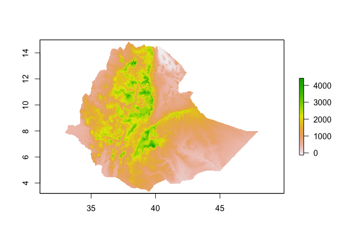
# Land use (# For information on land use classifications see http://due.esrin.esa.int/files/GLOBCOVER2009_Validation_Report_2.2.pdf)
ETH_land_use <- raster("https://github.com/phw272c/phw272c.github.io/raw/master/data/ETH_land_use.tif")
ETH_land_use
## class : RasterLayer
## dimensions : 4121, 5384, 22187464 (nrow, ncol, ncell)
## resolution : 0.002777778, 0.002777778 (x, y)
## extent : 33.00139, 47.95694, 3.398611, 14.84583 (xmin, xmax, ymin, ymax)
## crs : +proj=longlat +datum=WGS84 +no_defs
## source : ETH_land_use.tif
## names : ETH_land_use
## values : 11, 210 (min, max)
#Plot the land use raster
plot(ETH_land_use)
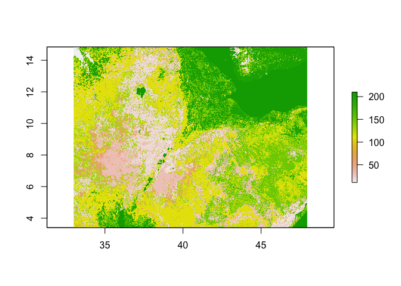
# For a break down of the classes in Ethiopia aka how often each land use type occurs
#(Note: this is just the number of pixels per land use type - NOT acres)
table(ETH_land_use[])
##
## 11 14 20 30 40 60 90 110 120 130
## 105074 336324 2451623 2223305 129786 813227 8 5254463 580793 1900890
## 140 150 160 170 180 190 200 210
## 1403832 1998099 6765 18 26026 6375 2947145 2003711
Resampling rasters
Its good practice to resample rasters to the same extent and resolution
(i.e. same grid). This makes it easier to deal with later and to relate
rasters to each other. The resample command in the raster package
makes this process easy. Here we are going to resample our land use
raster, but for a deeper dive on resampling rasters of different data
types, go
here.
The default method is bilinear interpolation, which doesn’t make sense
for our categorical variable, so we should use the nearest neighbour
function ‘ngb’
# Takes a little time to run..
ETH_land_use_resampled <- resample(ETH_land_use, ETH_elev, method="ngb")
# Get summaries of both raster objects to check resolution and extent
# and to see whether resampled values look right
ETH_land_use_resampled
## class : RasterLayer
## dimensions : 1416, 1824, 2582784 (nrow, ncol, ncell)
## resolution : 0.008333333, 0.008333333 (x, y)
## extent : 32.9, 48.1, 3.2, 15 (xmin, xmax, ymin, ymax)
## crs : +proj=longlat +datum=WGS84 +no_defs
## source : memory
## names : ETH_land_use
## values : 11, 210 (min, max)
ETH_elev
## class : RasterLayer
## dimensions : 1416, 1824, 2582784 (nrow, ncol, ncell)
## resolution : 0.008333333, 0.008333333 (x, y)
## extent : 32.9, 48.1, 3.2, 15 (xmin, xmax, ymin, ymax)
## crs : +proj=longlat +datum=WGS84 +no_defs
## source : ETH_msk_alt.grd
## names : ETH_msk_alt
## values : -189, 4420 (min, max)
Manipulating rasters
It is often the case that we want to change the resolution of a raster for analysis. For example, for computational reasons we might want to work at a coarser resolution. First, let’s check the resolution
res(ETH_elev) # in decimal degrees. 1 dd roughly 111km at the equator
## [1] 0.008333333 0.008333333
Let’s aggregate (make lower resolution) by a factor of 10
ETH_elev_low_res <- aggregate(ETH_elev, fact = 10) # by default, calculates mean
res(ETH_elev_low_res)
## [1] 0.08333333 0.08333333
plot(ETH_elev_low_res)
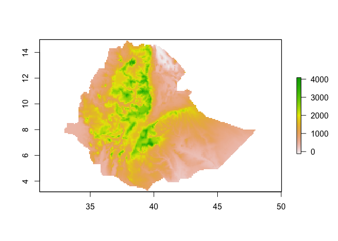
You can change the values of the pixels easily. For example, if you want
to change the ETH_elev raster from its native meters to feet, you can
mulitply by 3.28
ETH_elev_feet <- ETH_elev*3.28
plot(ETH_elev_feet)
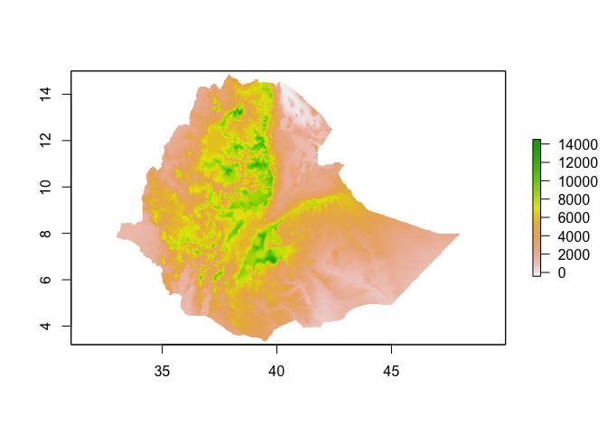
Similarly, you can categorize raster values
ETH_elev_categorized <- cut(ETH_elev, 4)
plot(ETH_elev_categorized)
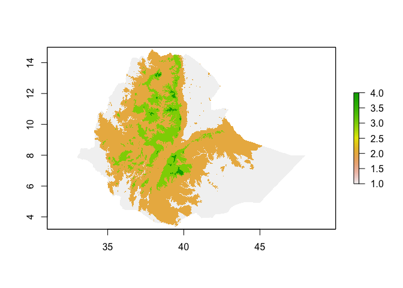
If a raster is the same resolution and extent, you can perform joint operations on them, for example subtract values of one from another
new_raster <- ETH_elev - ETH_land_use_resampled # Meaningless! Just for illustrative purposes..
plot(new_raster)
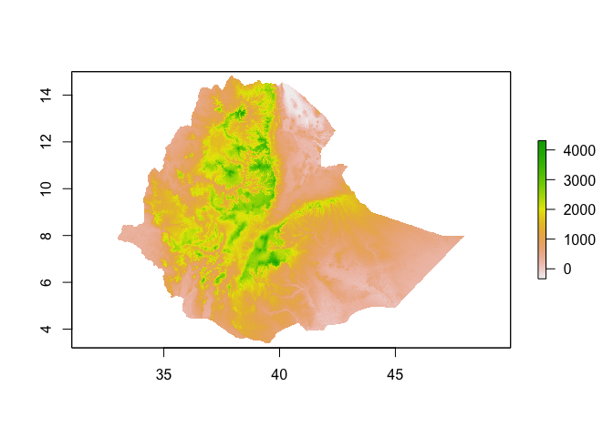
Extracting data from rasters
Now let’s extract values of elevation at each survey point. You can use
the extract function from the raster package and insert the extracted
values as a new field on ETH_malaria_data_SPDF
ETH_malaria_data_SPDF$elev <- extract(ETH_elev, ETH_malaria_data_SPDF)
ETH_malaria_data_SPDF # now has 3 variables
## class : SpatialPointsDataFrame
## features : 203
## extent : 34.5418, 42.4915, 3.8966, 9.9551 (xmin, xmax, ymin, ymax)
## crs : +proj=longlat +datum=WGS84 +no_defs
## variables : 4
## names : examined, pf_pos, pf_pr, elev
## min values : 37, 0, 0, 817
## max values : 221, 14, 0.127272727, 2451
You can also extract values using polygons e.g to get admin 1 level
elevations. You just have to define a function to apply, otherwise you
get all the pixel values per polygon. For very large rasters, check out
the velox package.
ETH_Adm_1$elev <- extract(ETH_elev, ETH_Adm_1, fun=mean, na.rm=TRUE) # takes a little longer..
Exploratory spatial analysis
We can now have a quick look at the relationship between prevalence and elevation. First generate a prevalence variable
ETH_malaria_data_SPDF$prevalence <- ETH_malaria_data_SPDF$pf_pos / ETH_malaria_data_SPDF$examined
Now you can plot the relationship between prevalence and elevation
ggplot(ETH_malaria_data_SPDF@data) + geom_point(aes(elev, prevalence))
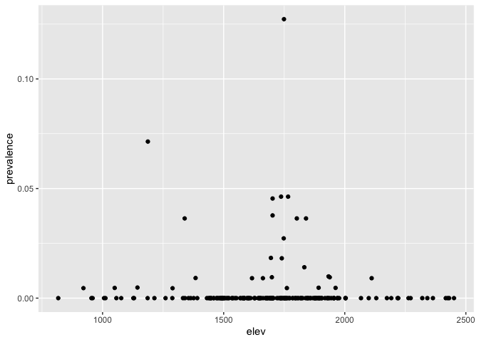
You might also be interested in distances to/from other features
(e.g. health facilities, water). Here we are going to load up a
waterbody layer (obtained via http://www.diva-gis.org/Data) and
calculate distance from each point. In this case, the file is in GeoJSON
format instead of Shapefile. readOGR is able to handle GeoJSON easily.
waterbodies <- readOGR("https://raw.githubusercontent.com/phw272c/phw272c.github.io/master/data/ETH_waterbodies.geojson")
## OGR data source with driver: GeoJSON
## Source: "https://raw.githubusercontent.com/phw272c/phw272c.github.io/master/data/ETH_waterbodies.geojson", layer: "ETH_waterbodies"
## with 380 features
## It has 5 fields
waterbodies
## class : SpatialPolygonsDataFrame
## features : 380
## extent : 33.00001, 46.80059, 4.232061, 14.55 (xmin, xmax, ymin, ymax)
## crs : +proj=longlat +datum=WGS84 +no_defs
## variables : 5
## names : ISO, COUNTRY, F_CODE_DES, HYC_DESCRI, NAME
## min values : ETH, Ethiopia, Inland Water, Non-Perennial/Intermittent/Fluctuating, ABAY WENZ (BLUE NILE)
## max values : ETH, Ethiopia, Land Subject to Inundation, Perennial/Permanent, ZIWAY HAYK'
plot(waterbodies)
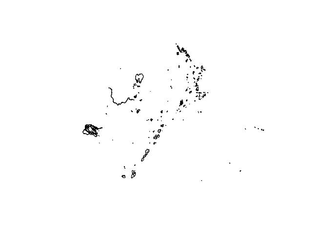
The goesphere package has some nice functions such as dist2Line which
calculates distance in meters from spatial data recorded using decimal
degrees. Warning: takes a little while to compute
dist_to_water <- dist2Line(ETH_malaria_data_SPDF, waterbodies)
This produces a matrix, where each row represents each point in
ETH_malaria_data_SPDF and the first column is the distance in meters
to the nearest waterbody
head(dist_to_water)
## distance lon lat ID
## [1,] 116153.32 38.03253 6.426888 363
## [2,] 163802.37 38.56778 7.082849 358
## [3,] 137683.25 40.65231 8.808335 238
## [4,] 173427.48 37.62588 5.794201 367
## [5,] 40482.23 37.00735 4.811708 365
## [6,] 163677.02 38.56340 7.075962 358
# Can add to your data frame by extracting the first column
ETH_malaria_data_SPDF$dist_to_water <- dist_to_water[,1]
If the objects you are interested in calucating distance to are points as opposed to polygons/lines (as above) you first have to calculate the distance to every point and then identify the minimum. For example, imagine waterbodies data was only available as a point dataset (we can fake this by calculating the centroid of each polygon)
waterbodies_points <- gCentroid(waterbodies, byid=TRUE)
Now calucate a distance matrix showing distances between each
observation and each waterbody point. the distm function creates a
distance matrix between every pair of data points and waterbody points
in meters.
dist_matrix <- distm(ETH_malaria_data_SPDF, waterbodies_points)
Then use the apply function to apply the ‘minimum’ function to each row (as each row represents the distance of every waterbody point from our first observation)
ETH_malaria_data_SPDF$dist_to_water_point <- apply(dist_matrix, 1, min)
The alternative, much faster, but potentially less accurate method to ‘distm’, is to use the nn2 function from the RANN package. This allows you to calculate the nearest point from each observation and then you can use the ‘distGeo’ function from the ‘geosphere’ package to calculate the distance in meters. The reason this could be inaccurate, is that the nearest point in decimal degrees might not be the nearest in meters as degrees are not a good measure of distance. In most cases, you are probably OK.
library(RANN)
library(geosphere)
# Get the index of the waterbody points that are nearest to each observation
nn <- nn2(waterbodies_points@coords,ETH_malaria_data_SPDF@coords,
k=1)
# Calculate the distance in meters between each observation and its nearest waterbody point
ETH_malaria_data_SPDF$dist_to_water_point <- distGeo(ETH_malaria_data_SPDF@coords,
waterbodies_points@coords[nn$nn.idx,])
Useful resources
-
The raster package vignette is extremely useful
-
If you are bumping into speed issues extracting/summarizing raster data, have a look at the exactextractr package
Key readings
This week is all about practice. Instead of working through journal articles, have a play with your data and get to know how the functions work.
Pop quiz answers
Can be found here